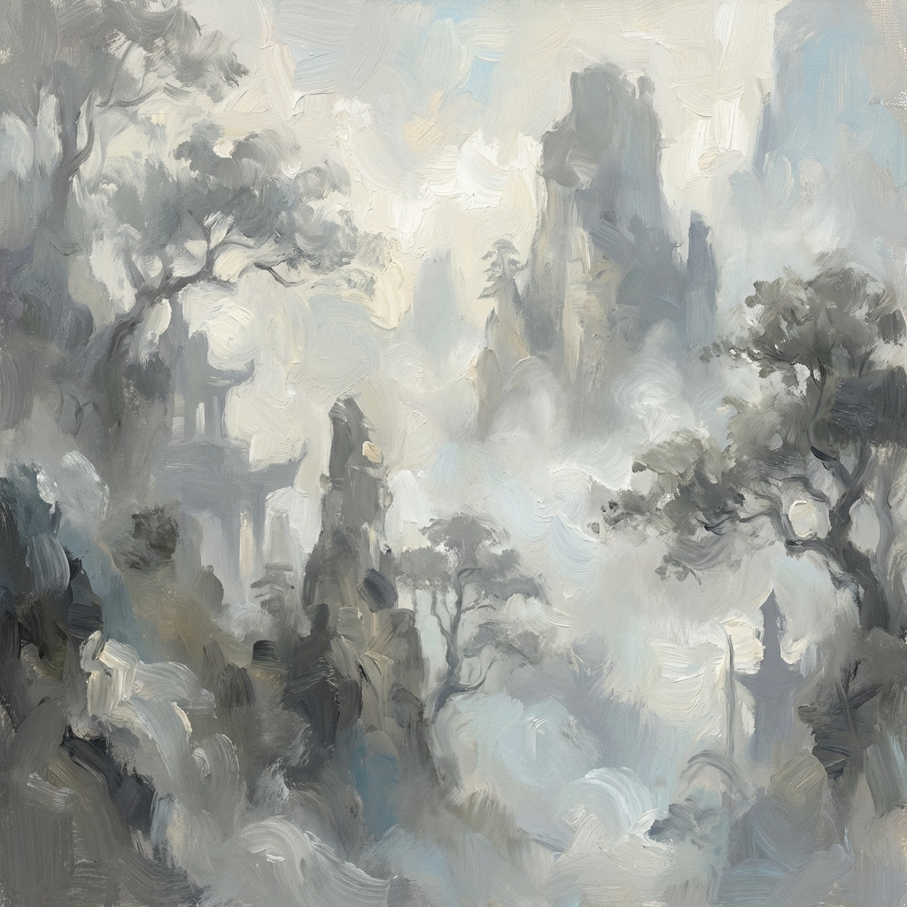

Nella nebbia

In equilibrio tra sogno e realtà
fatta di niente
appari all’improvviso.
fatta di niente
appari all’improvviso.
Col tuo fiabesco abbraccio che domina su tutto
tutto nascondi
ma all’immaginazione illumini la via.
tutto nascondi
ma all’immaginazione illumini la via.
Alberi fantasmi, ombre di se stessi
impassibili e fieri
emergono al cammino
e sotto le tue coltri la campagna sonnecchia.
impassibili e fieri
emergono al cammino
e sotto le tue coltri la campagna sonnecchia.
Sulla strada sospesa nel vuoto
come il tempo che si ferma
d’incanto mi smarrisco,
come il tempo che si ferma
d’incanto mi smarrisco,
ma quando in cielo
dell’evanescente e pallido sole
appare il disco,
dell’evanescente e pallido sole
appare il disco,
tutta d’oro lui ti fa
prima di dissolverti
nel tuo nulla.
prima di dissolverti
nel tuo nulla.
Paola Spremulli